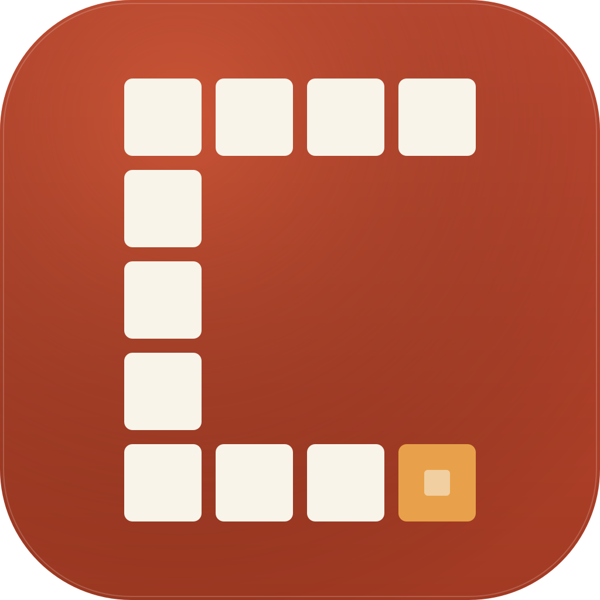

The CivicByte identity is a single, durable glyph: a four-by-five pixel grid arranged into a stencil "C," with a single ochre square as the byte. It reads at sixteen pixels and prints on a billboard.
Designed first at 1024 px for the App Store, then verified down to 16 px so it never loses its shape. The bottom-right pixel breaks ranks — that's the byte.

Imagined sitting next to the apps it competes with for attention. Civic without being clinical.
The same grid scales to any size. At 16 px each cell is two pixels; at 1024 px each cell is 132 px. Nothing ever blurs.
Fraunces text, 500 weight; the byte half is set in italic 500 in brick. The compound name reads as one word but the eye separates the civic mission from the technical means — by design.